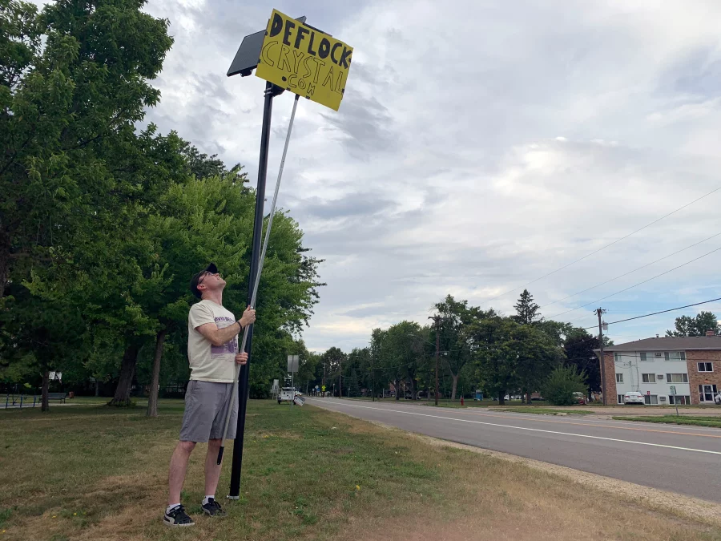

Privacy
License plate readers can record where and when vehicles are seen. This raises questions about location privacy and how information about drivers may be used.
Learn More About PrivacyLearn about some of the concerns surrounding automated license plate reader cameras.
Automated license plate reader cameras can provide useful information to law enforcement, but their use also raises important questions about privacy, data collection, and transparency.
Select one of the topics below to learn more.

License plate readers can record where and when vehicles are seen. This raises questions about location privacy and how information about drivers may be used.
Learn More About PrivacyLicense plate reader systems may collect information such as license plate numbers, vehicle images, locations, and timestamps.
Learn More About Data CollectionCommunities may want to understand where cameras are located, how they are approved, who can access their information, and what rules govern their use.
Learn More About Transparency